安全杂项(Misc)
1.你没见过的加密。
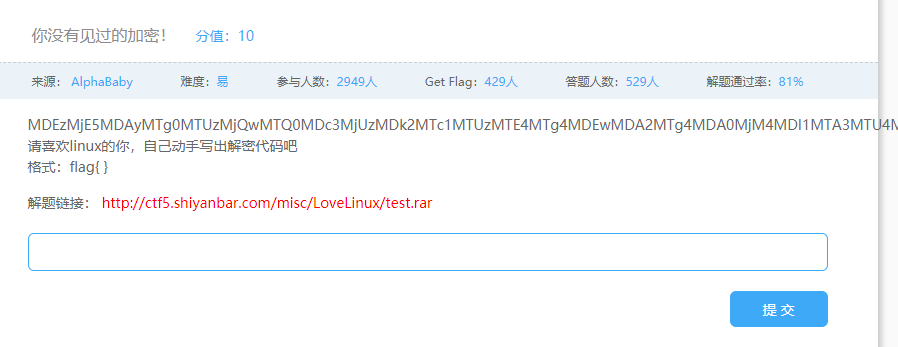
附件代码：
1 |
|
相对应的解密代码：
1 |
|
flag： flag{you_are_successful}
跑代码的时候要注意PHP的版本问题，因为php的版本不同，导致的srand()函数生成的种子出来的随机数不同。（我是这样理解的）
2.MD5之守株待兔，你需要找到和系统锁匹配的钥匙
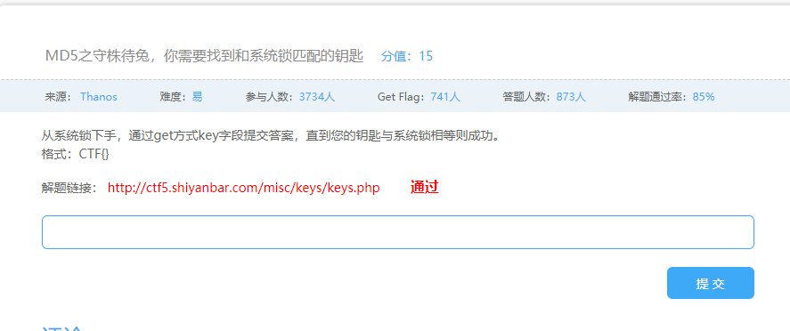
某位大佬的脚本：
1 | import requests |
跑一下就出来了flag。（很佩服）
3.啦啦啦
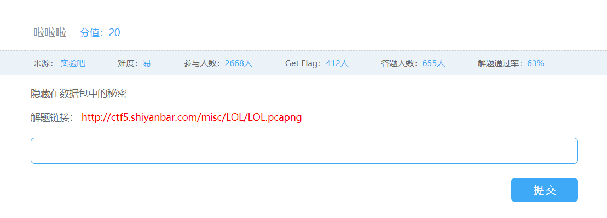
打开题目后看到了个LOL,pcapng的数据包，http导出后，对每个进行查看，可以看到有个zip的压缩包藏在里面
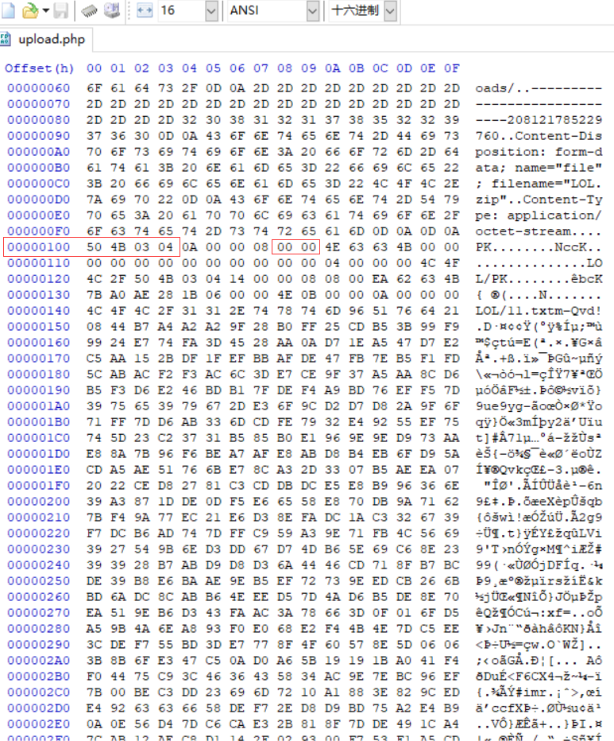
看到这个压缩包是个zip的压缩包，而且没有加密。果断使用binwalk进行分离一下
（我不知道为什么别人需要修复压缩包，我的直接Binwalk就出来了）
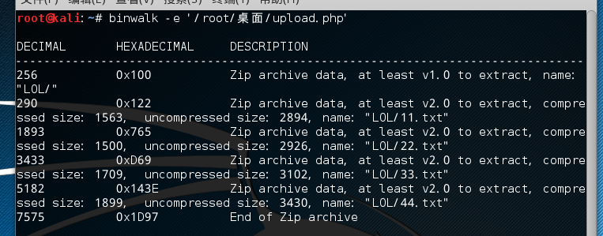

然后把他们解压出来后，是4个文本，都把里面的数据拖进winhex里面保存一下，打开后就变成了4个图片，发现是个散开的二维码，拼起来就可以了
扫描一下：

出现了flag
4.你知道他是谁吗？
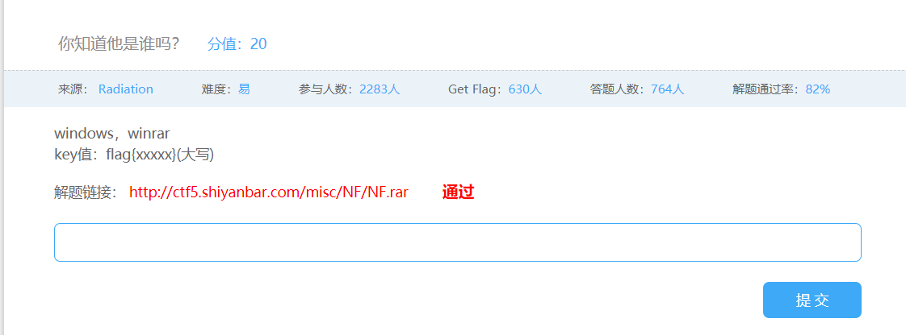
看到提示说让用winrar来解压，说明害怕数据流失，那么这道题八成是和数据有关。
解压后，看到了个jpg格式的图片，进如hex中也没有发现什么。然后使用Stegsolve查看也没有发现什么
然后想了下估计是流隐写，想起来了有一次CTF群的一个入群题，就是关于流隐写的。下载工具打开看了下
发现了flag的文件，保存下来看一下
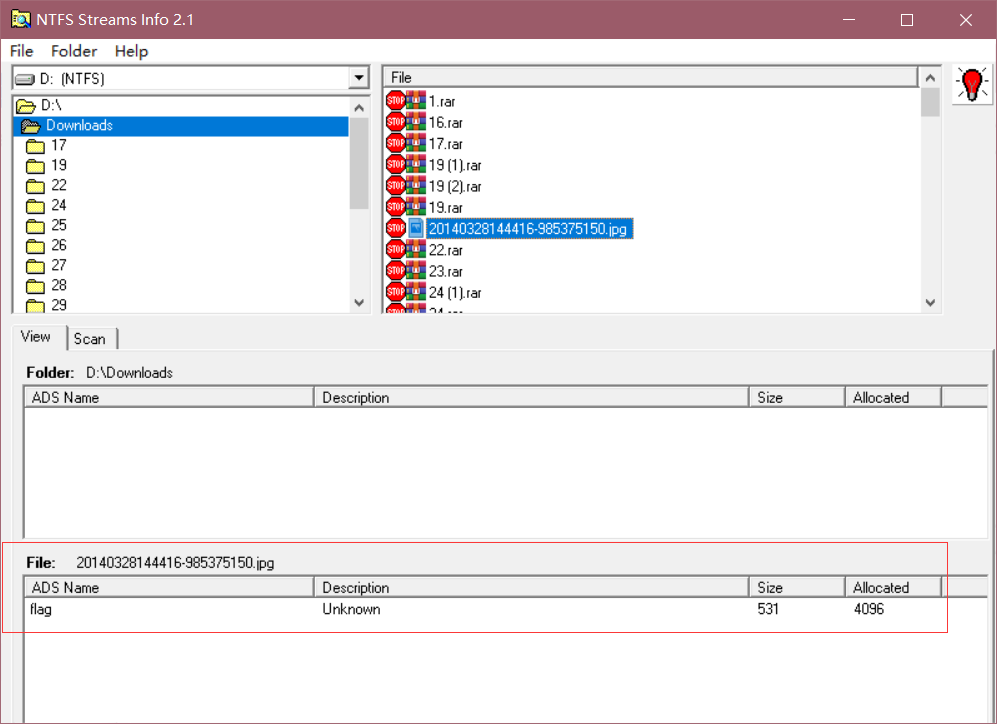
打开发现了是个转轮密码，ISCC2017的杂项有一道题就和这个一样。
解密原理和方法看这里就会了
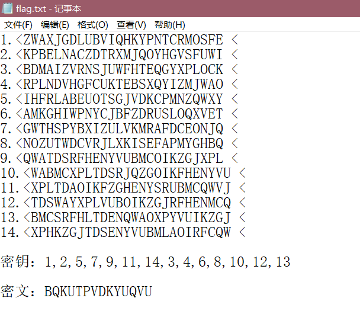
最后解密出来有很多组，但是flag那组是FLAGISHEREABCD。
5.损坏的U盘镜像

打开以后发现CTF.hdd既然是U盘镜像，里面肯定藏文件，所以去formost -T分离一下看看
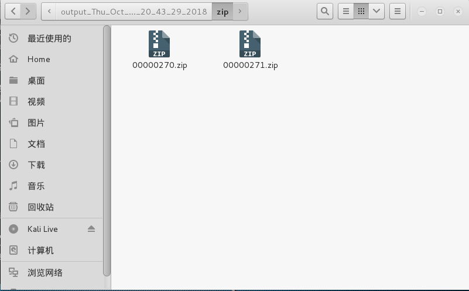
发现了两个压缩包。然后我们去打开看里面内容


这里发现一个需要密码，另外一个则是说密码是checksum的32位MD5（checksum取前4字节）
checksum为AABBCCDD则密码为B631050B08627046D47E0CC16250BA2E
MD5解密一下看到B631050B08627046D47E0CC16250BA2E值就是AABBCCDD
所以我们需要计算一下exFAT Boot Checksum的值
链接
exf的文件格式
根据exF的文件格式，我们可以知道，他的引导校验区在第十二个扇区
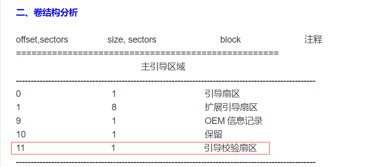
这里虽然基本看懂了，但是水平比较渣，还写不出来脚本，所以借某wp的大佬的代码
1 | import binascii |
最后结果：0x81c6fa94
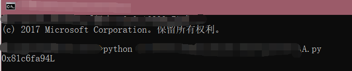
因为高位在右边，所以是94fa6c18
然后我们Md5加密一下得到：
1 | import hashlib |
结果为：c9737665d39274f6c5a256b943748068（这里说一下，因为md5是不区分大小写的，但是压缩文件是区分的，所以我们要把这里面的小写字母改成大写）
然后解压文件，就看到了flag
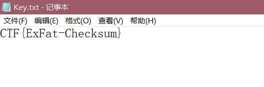
6.spaceport-map
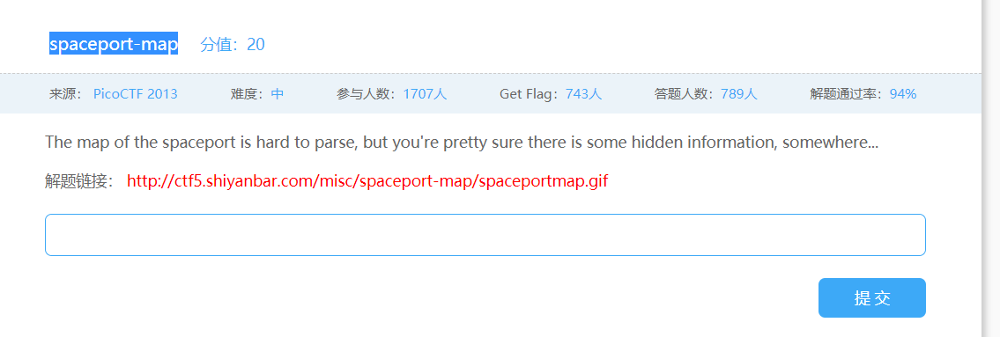
这里打开题目以后，发现，里面是个地图。然后下面在闪着一行英文字母
比较有意思的是，他闪着字母有一段频率是不相同的，如果眼快的可以看到Key的字样以不同其他字母段的频率闪过。所以我们进行gif图片分离一下，然后就能看到key了，去掉！号就是flag了
flag: Do passports let you fly interstellar
7.pilot-logic
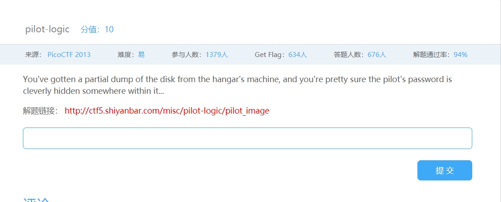
打开题目后得知：你从机库的机器上得到了磁盘的部分转储，你很确定飞行员的密码被巧妙地隐藏在其中……（取证类题目）
然后用winhex打开搜索一下Pass,就出现了flag
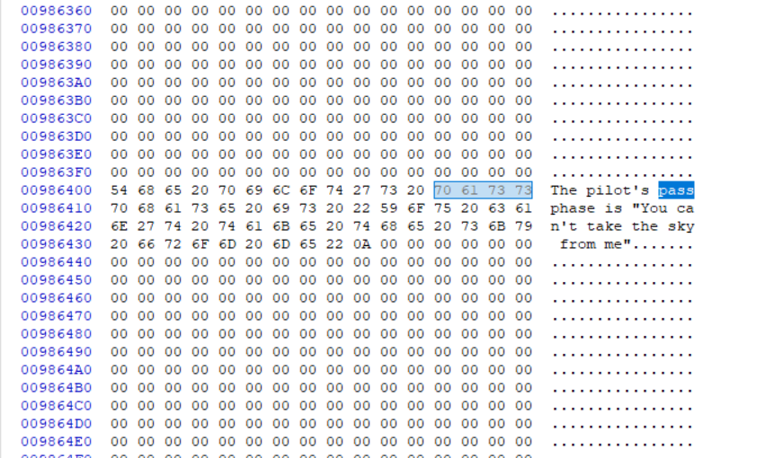
flag: You can’t take the sky from me
8.deeeeeeaaaaaadbeeeeeeeeeef-200
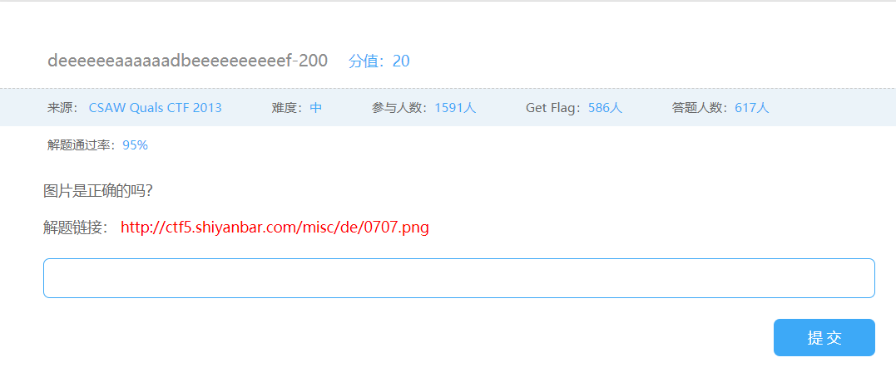
打开题目发现是个png的图片。根据题目可以知道，是图片出了问题。
看到这里发现，有部分没了。
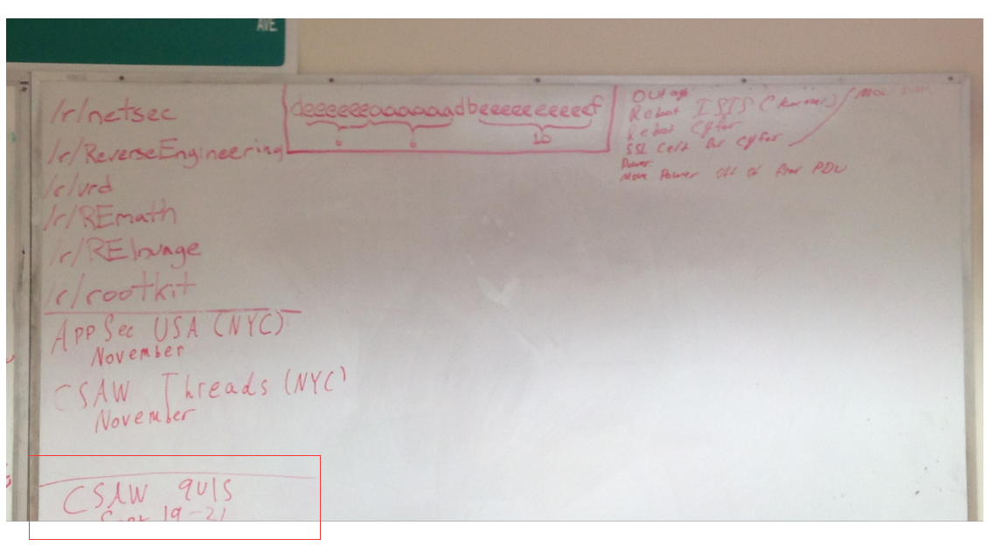
进winhex里面改一下png的分辨率就OK
我这个是改过的，所以前面的和后面的一样。没改前是不一样的
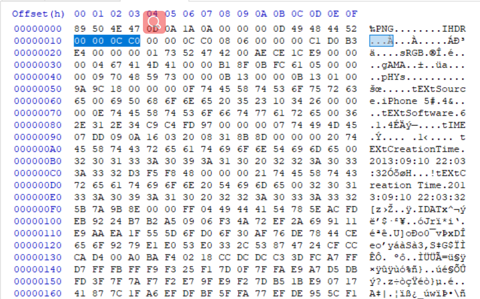
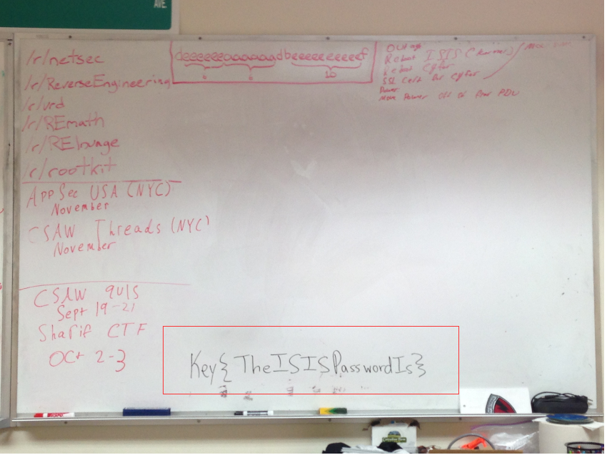
flag：Key{TheISISPasswordIs}
9.这就是一个坑
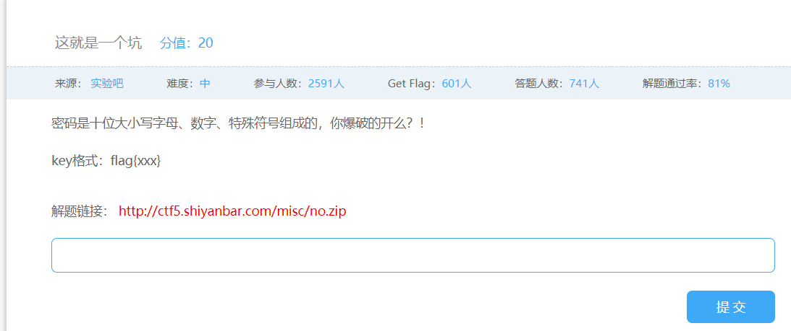
因为我的电脑打不开那个软件，但是以前用过。
所以这道题就不试验了，想知道的，可以去参考ISCC2018的杂项当中有一道题就是用的这种方法
flag： flag{Mtf1y@ }（@后面四个空格）
10.紧急报文
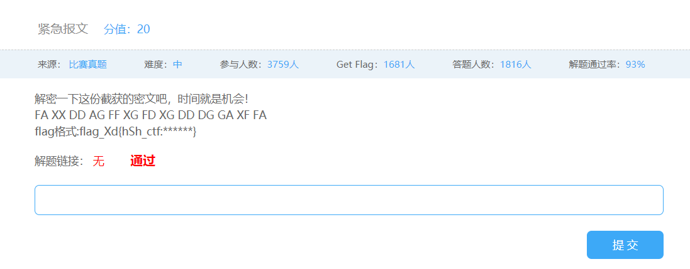
打开后，真的不知道是什么加密方式。然后看了wp以后才知道是ADFGX密码
因为密文都是由ADFGX组成
然后对照密码表
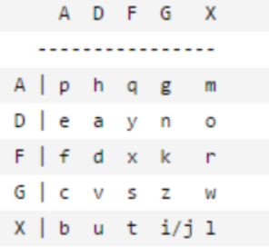
然后对照密码表（x,y）来进行解密，最后明文就是：flagxidianctf
根据题目格式：flag就是flag_Xd{hSh_ctf:flagxidianctf}
11.flag.xls
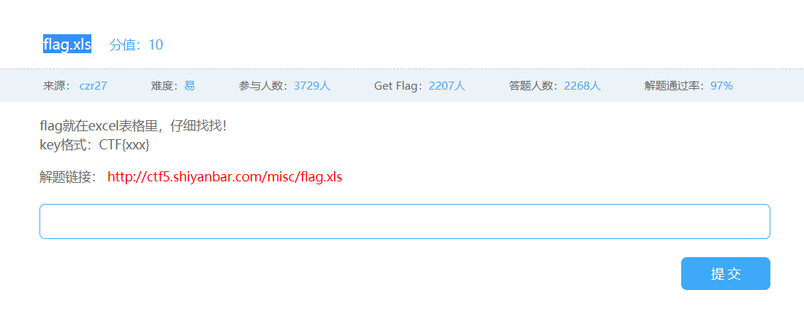
这个题目直接winhex打开搜索下CTF这个关键字就行了
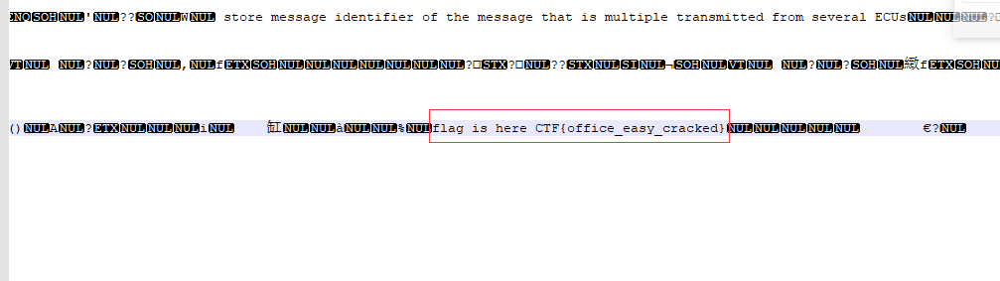
最后flag: CTF{office_easy_cracked}
12.Canon
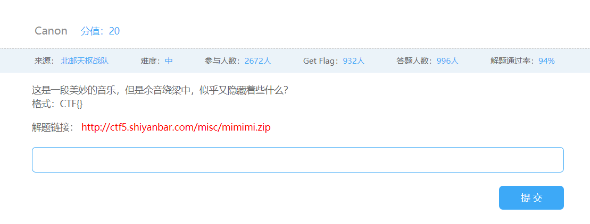
根据题目提示：MP3Stego,很显然，这是个mp3的隐写。但是mp3隐写需要密码才能分离。所以这里的密码就是Canon。
MP3Stego命令：解密工具(MP3stegoDecode.exe) -X是获取隐藏的东西 -P后面写密码

然后打开文件夹下刚刚解密出来的music.mp3.txt文件后看到了一串密码，这个就是解压zip.zip的密码。
解压密码：pqiem*zoei$%h

解压后发现是一堆字符

使用base64解密以后，仔细看就能看到flag
flag: CTF{WONVPAOAIUWNVPAOINE}
13.ROT-13变身了
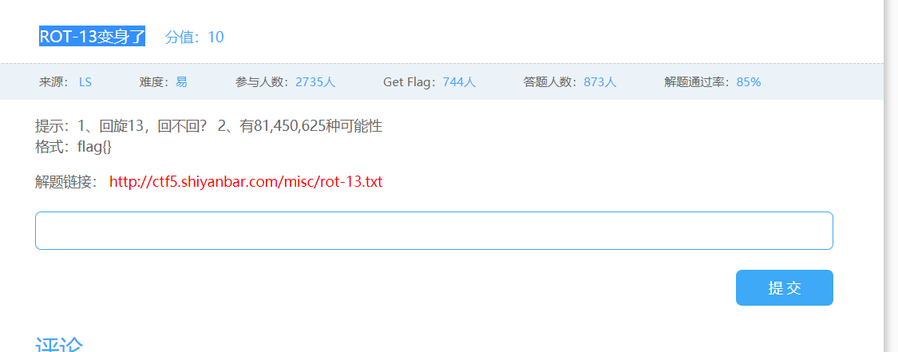
打开后看到题为：
破解下面的密文：
83 89 78 84 45 86 96 45 115 121 110 116 136 132 132 132 108 128 117 118 134 110 123 111 110 127 108 112 124 122 108 118 128 108 131 114 127 134 108 116 124 124 113 108 76 76 76 76 138 23 90 81 66 71 64 69 114 65 112 64 66 63 69 61 70 114 62 66 61 62 69 67 70 63 61 110 110 112 64 68 62 70 61 112 111 112
flag格式flag{}
看到提示以后：1、回旋13，回不回？ 2、有81,450,625种可能性
首先看到这样子的列表，肯定会想到转ASCII码。但是试了一下发现结果不对劲。所以看到提示1是每个减少13以后的ASCII码才对
1 | a = "83 89 78 84 45 86 96 45 115 121 110 116 136 132 132 132 108 128 117 118 134 110 123 111 110 127 108 112 124 122 108 118 128 108 131 114 127 134 108 116 124 124 113 108 76 76 76 76 138 23 90 81 66 71 64 69 114 65 112 64 66 63 69 61 70 114 62 66 61 62 69 67 70 63 61 110 110 112 64 68 62 70 61 112 111 112" |
结果为：
FLAG IS flag{www_shiyanbar_com_is_very_good_????}
MD5:38e4c352809e150186920aac37190cbc
然后这里思路断了，看了wp以后，才知道这里的后四位问号需要与我们的猜出来的数值整体md5需要与下面的md5相同才可以得到flag。
所以我们需要写个脚本来爆破一下。看了某位大佬的wp学习到，ascii码的可见字符只有95个，也就是32-126。然后我们用这个来构造脚本
1 | import hashlib |
最后跑出来的flag：flag{www_shiyanbar_com_is_very_good_@8Mu}
14.异性相吸
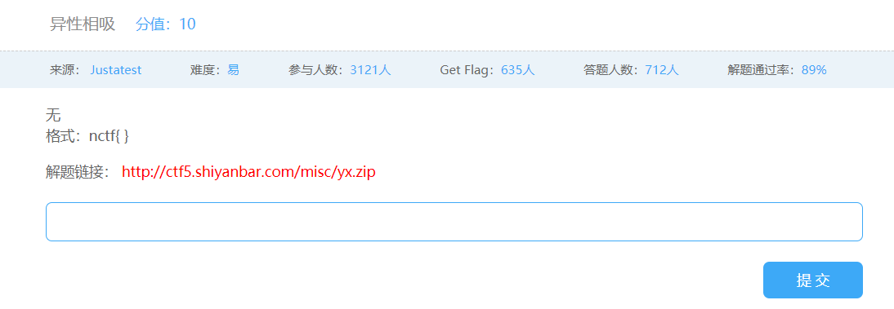
这道题就是二进制的简单异或，借某位大佬的脚本：
1 | # !usr/bin/env python |
最后的flag:nctf{xor_xor_xor_biubiubiu}
15.Snake
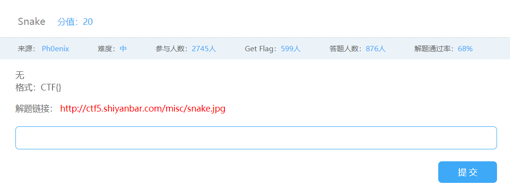
很清楚这个题目当时出现在一次CTF比赛当中过。当时放弃了。所以这次就看看wp按着做做
打开是一个蛇的jpg的图片。然后题目也是蛇。先foremost -T 看到有一个压缩包，里面有一个cipher密文一个key密钥，密钥经过base64以后，发现是一段英文。
What is Nicki Minaj’s favorite song that refers to snakes?
然后我们翻译过来以后：妮琪·米娜最喜欢的关于蛇的歌是什么?
然后我们上网搜索到他有关蛇的歌是：anaconda
所以密钥就是:anaconda
然后根据wp所述，我们继续进入这个：
http://serpent.online-domain-tools.com/
进去选择读取密文文件，然后输入密钥，解密方式选择serpent。据wp所述，这个也有蛇的意思。然和解密就OK
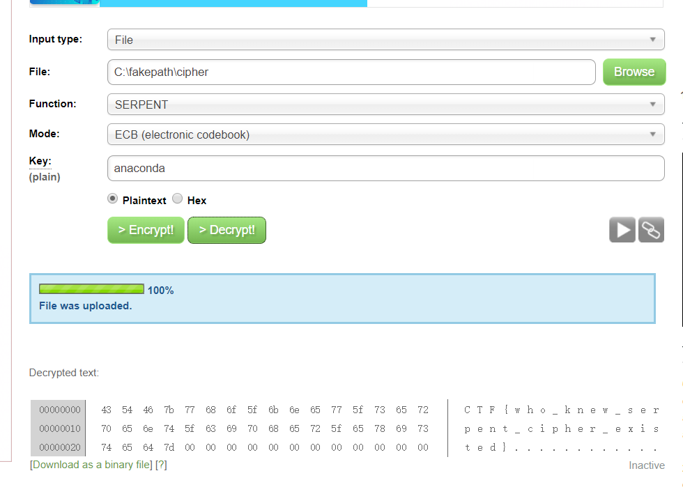
最后的flag：CTF{who_knew_serpent_cipher_existed}
16.BAT公司信息查询系统
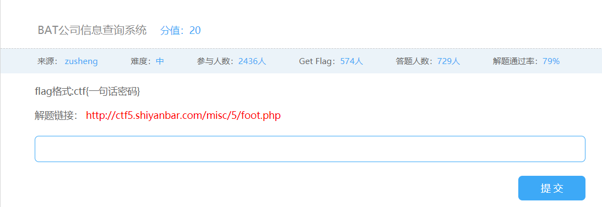
这个题目打开以后，发现全是二维码，然后让输入个id来查询。
先QR扫描一下发现
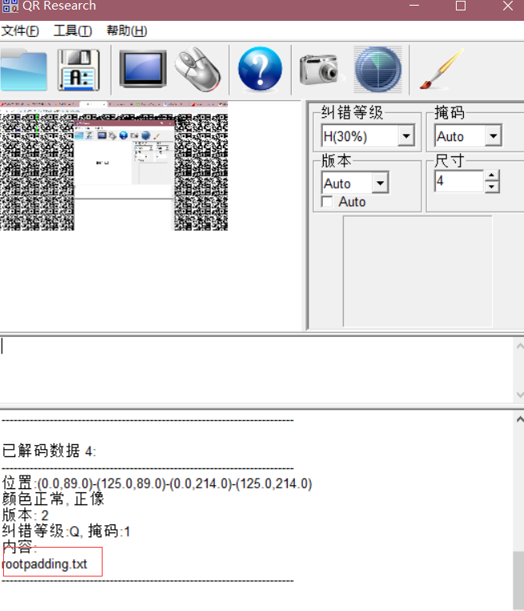
我们扫描到了一个路径，然后我们登陆一下看看。
发现了源代码：
1 | $usera = ($_POST['userid']); |
然后我们看到这个代码需要我们提交的userid又要等于0还要等于1。很明显PHP弱类型。可以构造userid=0.999999999999999999999999去提交看一下
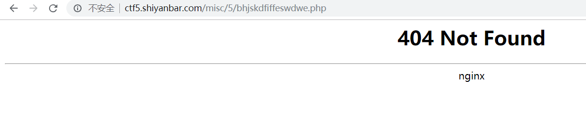
发现报错了，然后卡住了。看了wp以后得知，需要查看404页面的源代码
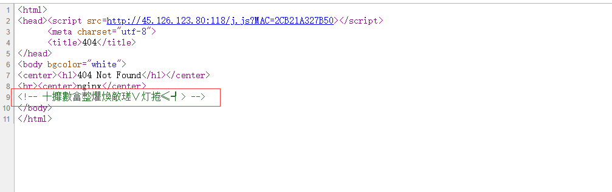
然后我们看到了一段这样的密文，继续根据wp得知，这是一段编码过后的一句话。
需要我们用txt以Unicode的编码方式保存一下，然后用winhex打开后可以看到密码为：oprcd
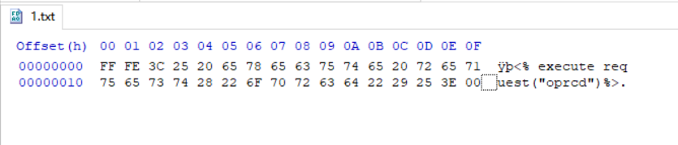
所以最后的flag：ctf{oprcd}
17.Only one file
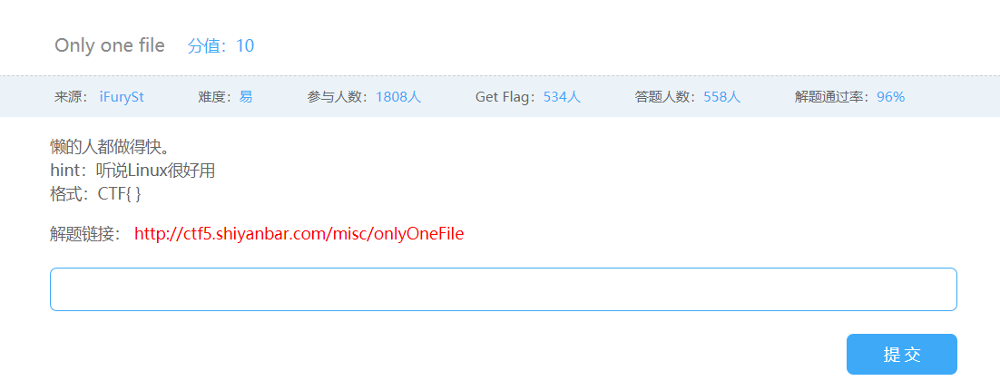
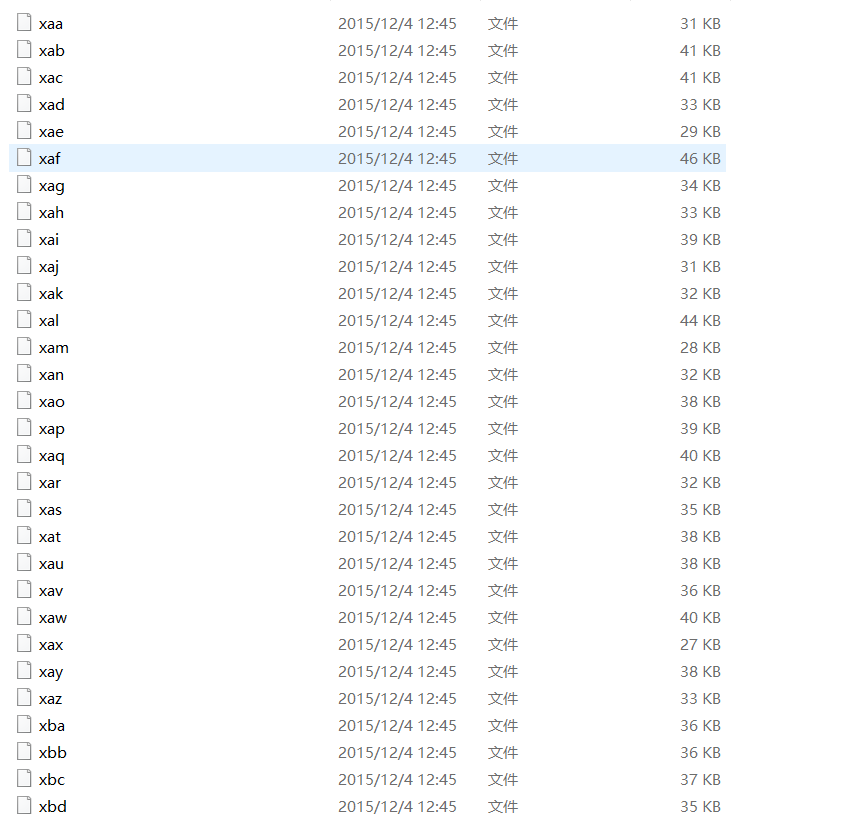
发现是一堆的文件，每一个打开都有点内容，第一个开头很像是png的文件头。
结果，这个是被拆分开了的png的图片。有点像是sos的那个题目，但是那个脚本对于这个题来说不求行了。
所以看了下wp，发现Linux可以直接合并
直接进入Linux里面合并一下就好了。
命令：cat 你的文件夹/* >1.png
然后会出现一个图片
用那个Adobe Fireworks CS5 打开后，可以看到的一个图层，是个二维码
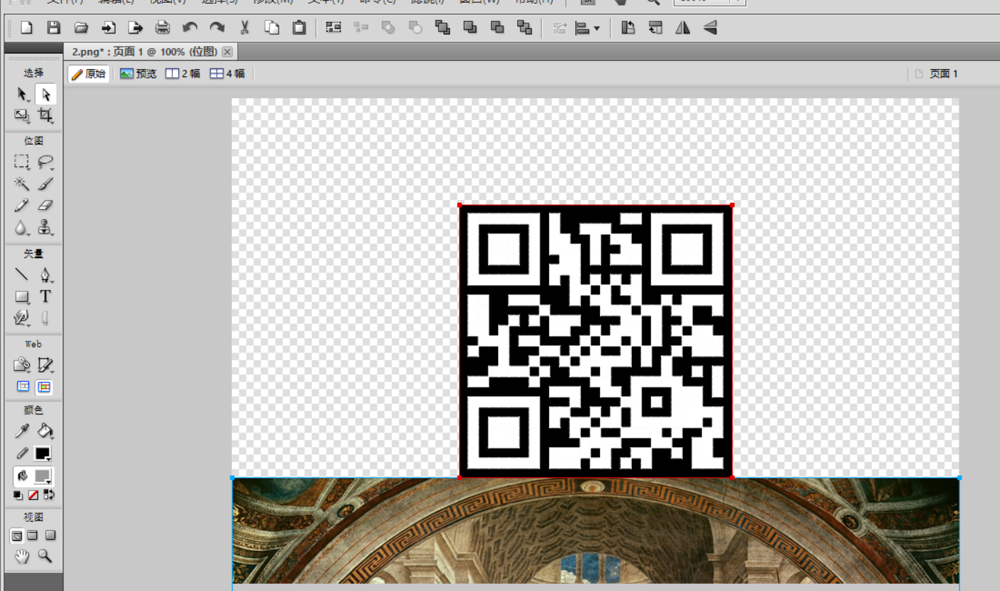
然后QR扫描一下就行了
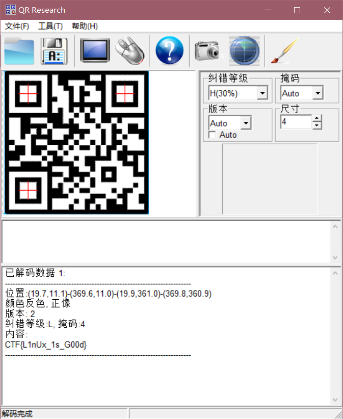
flag：CTF{L1nUx_1s_G00d}
WEB
1.这道题有点难
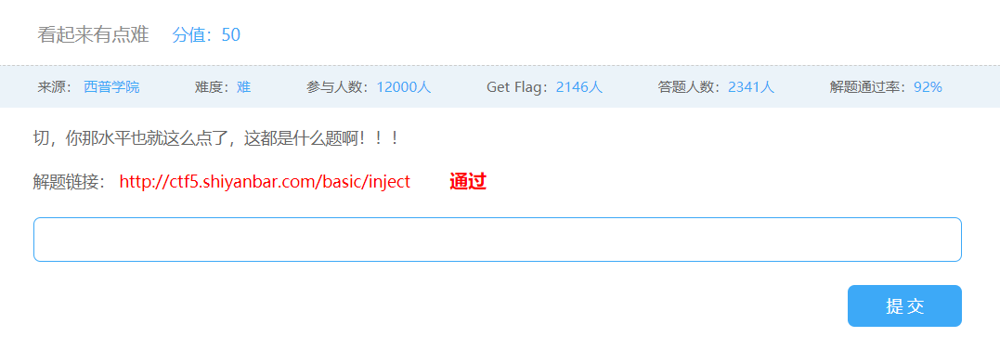
进入这个网址看到
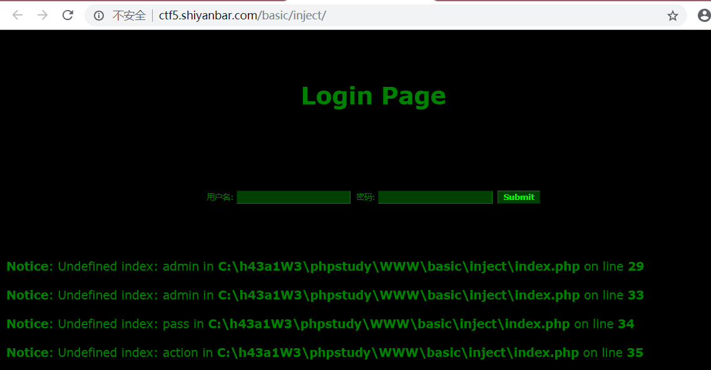
然后我们随便输入个admin和admin。提交一下，发现它是以GET的方式提交的
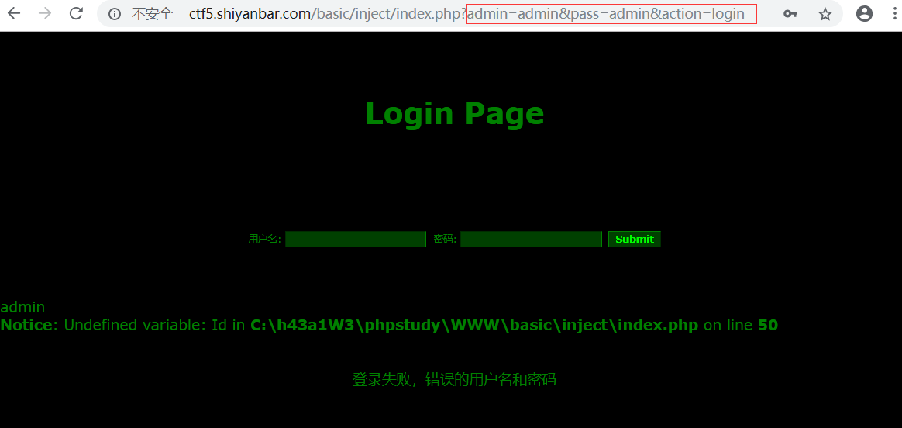
然后我们赋值下来去sqlmap里面跑一下
基本注入命令:
这里的” url “必须带参数才能跑
1 | sqlmap -u "url" //检测注入点 |
那么来跑一下这个题实战一下看看
url：http://ctf5.shiyanbar.com/basic/inject/index.php?admin=admin&pass=admin&action=login
第一步检测注入点：
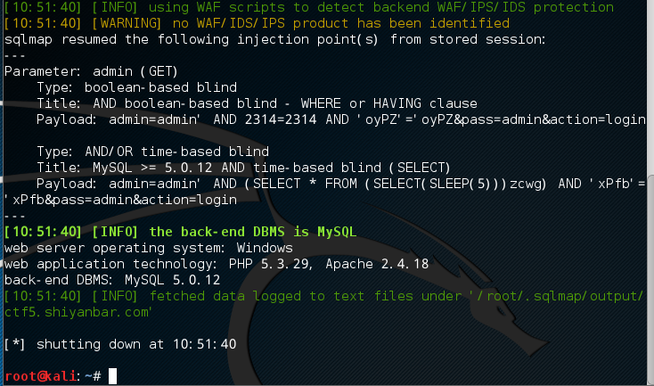
发现注入点，下一步咱们暴库
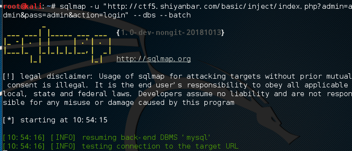
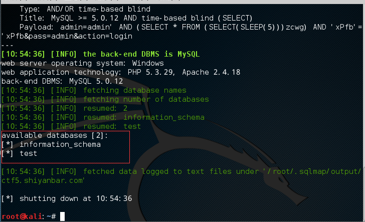
库出来了，我们选择test这个库来继续爆表名
命令：sqlmap -u “http://ctf5.shiyanbar.com/basic/inject/index.php?admin=admin&pass=admin&action=login" -D test –tables –batch
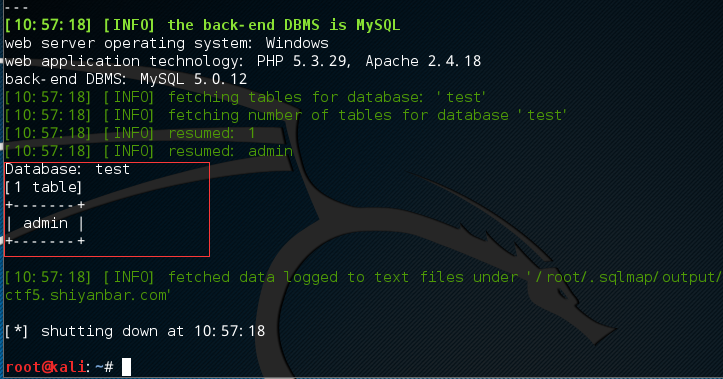
表名就出来了，继续我们看看他表中的字段
命令：sqlmap -u “http://ctf5.shiyanbar.com/basic/inject/index.php?admin=admin&pass=admin&action=login" -D test -T admin –columns –batch
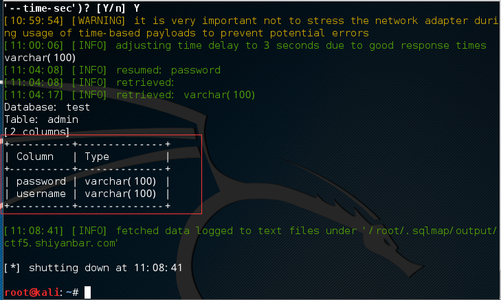
OK，马上就到最后了，继续下一步，查看其中的内容
命令：sqlmap -u “http://ctf5.shiyanbar.com/basic/inject/index.php?admin=admin&pass=admin&action=login" -D test -T admin -C password –dump –batch
然后就出来就能看到password的值
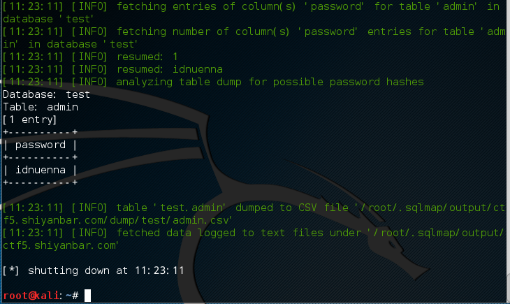
我们用账号密码去登陆一下看看，出现KEY :!@#WwwN5f0cu5coM
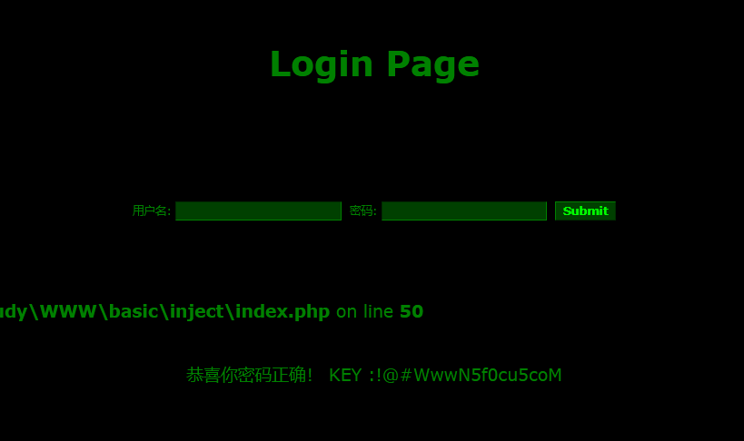
flag: !@#WwwN5f0cu5coM
2.猫抓老师
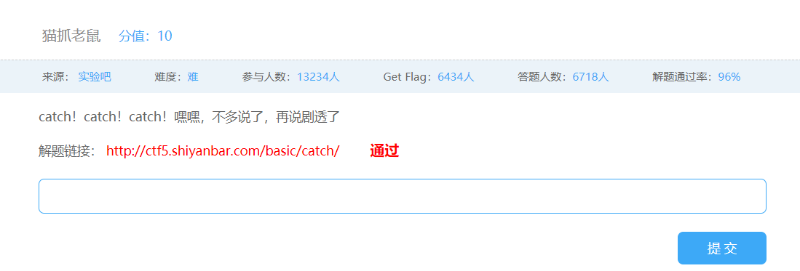
打开题目后看到让我们输入个key，我们输入后提示check Falied
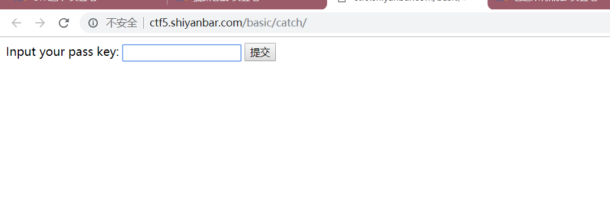
然后我们使用BP抓包
使用BP的Repeater的功能去看看回显
发现这里面有个Base64以后的字符，不解码提交一下，然后出现KEY
KEY: #WWWnsf0cus_NET#
3.头有点大
打开后看了一个页面，翻译过就是
得到了三条有用的信息：先知道要修改htpp的头，使用.net framework 9.9，然后还要使用英格兰地区的语言访问才可以
直接BP抓包修改下
先修改下语言：
语言代码表
英国的就是en-GB
然后就是.net framework 9.9的问题了，要知道.net framework9.9是不存在的。所以我们需要绕过他
如果绕过
只需要修改User-Agent为Mozilla/4.0 (compatible; MSIE 7.0; Windows NT 5.1; .NET CLR 1.1.4322; InfoPath.1; .NET CLR 9.9)
这里需要了解一下
UA的作用
常见浏览器的UA
然后提交，发现不行，看了一位大哥的wp的以后才知道，这个需要使用IE进行访问才可以（我没有看到最后的英格兰与IE）。所以我们使用IE浏览器进行抓包在把我们的这个头加进去提交一下
结果真的出现了KEY
4.貌似有点难
进去题目链接以后，提示
需要进行代码审计
1 |
|
此时我们就会想到IP欺骗的方法有很多
了解IP欺骗的方法
然后我们一个一个试验，最终在改为Client-Ip: 1.1.1.1的时候，出现了flag
5.这个看起来有点简单!
打开题目后，发现是个这样的页面
然后我们要找找注入点
上我们的神器sqlmap检测看看
果然存在
然后进行我们的常规sqlmap的操作，不会的看上面，我有写
附上最后跑出flag的命令：sqlmap -u “http://ctf5.shiyanbar.com/8/index.php?id=1" -D my_db -T thiskey -C k0y –dump –batch
我不知道为什么我为什么没出现那些columns的问题。直接就跑出来了。。。
6.PHP大法
这道题打开后发现是个php的页面，提示index.php.txt有东西。打开后是源代码，需要我们审计
1 |
|
基本上代码我们读懂了要干啥了，那么从当中分析出，我们的Id是hackerDJ的内容，但是在上层又不能存在hackerDJ的内容，还得是url编码过的。我貌似还是不读懂，再去看一遍程序，还是想不通。
然后去试了一下这个对hackDJ进行url编码一下提交看看，发现不行（这里我们使用burpsuit自带的编码解码器来进行）
这里发现了个问题，为什么我们的url编码过的字符在回车后被解码了呢？
反而变成了id=hackerDJ。上网百度了一下以后才知道，原来浏览器在访问的时候，自动会先进行一次urldecode，所以我们这里需要进行两次urlencde才行。继续使用burpsuit进行编码。
然后提交一下就出现了flag了
7.what a fuck!这是什么鬼东西?
打开题目后发现是一堆jsfuck的字符。
然后我们需要解码，打开谷歌浏览器，按一下F12，将内容复制到console里面，然后回车就弹出了Key（这里不止谷歌，只要是浏览器F12以后找到控制台粘贴进去回车就OK了）
于是flag就出来了
RE
1.此题不简单
打开题目以后是个可执行的.exe文件，然后根据题目所述，需要找到hello的密钥
先运行一下，找一下关键词，然后去OD里面找
关键词：密钥正确、用户名、注册码、验证、密钥无效、信息
然后打开OD智能搜索一下
然后我们进入判断密钥的那层看一下汇编指令，判断一下他到底是通过那种方式来验证的我们的密钥
我们这里看到了他的验证算法，这里看到他进行了个判断，然后判断上面又进行了个比较。所以可以知道，他是先比较字符串，然后再判断，双重验证。所以我们从比对哪里下个断点，来找一下他正确的密钥
运行以后，我们就可以看到他的正确密钥了。
所以最后的flag : Happy@!GA0U
2.证明自己吧
打开这个题目以后，发现是个.exe的文件，打开以后看到让输入一个正确的字符串才可以。
查壳这一步就不说了，没发现有壳
打开IDA看一下

可以知道的是，通过程序来看，sub_401060才是判断我们输入的字符串是否正确的关键，所以我们要进去看一下

从最后一句我们就可以得知，a1和v5在进行比对的过程中，只有我们输入的字符达到了v5的条件，那么才能说明你的字符正确。
那么逆向的思路就是：
条件v5每个位数-5 = flag(让我们输入的)字符^0x20。（这不是个等式，不能进行平移。）
那么flag就是：(v5 - 5) ^ 0x20
接着我们呢就用OD一步一步来找找我们这段程序进行比对的汇编代码。

一打开这个main类的程序就自己出来了，省去了我们搜索关键字来找他的过程。
然后我们找到了往这个函数传值的过程。也就是我们输入字符串往比对函数里面送的过程。
然后我们找到哪个函数的地址所在位置看一下

发现没有看到进行比对和判断的指令，所以我们继续往下拉。

这里我们找到了刚刚在IDA里面sub_401060函数当中处理a1的那段代码的汇编指令了。但这很显然，不是我们需要的，还要继续找a1与v5进行比较的那一段的汇编指令

这段很显然也不是，那么同样的方法我们继续往下面找。

我们在找到了以后，对这个位置下一个断点，然后运行一下看看他的值。

需要注意的一点是，因为前面IDA当中看到，第一层if判断语句的成立条件是我们输入的字符串长度只能等于14才可进行下面的密码运算。不然就会直接跳出，无法到达我们的断点位置。
这里我输入十四个1来代表我们的字符串

然后就是来找下我们的v5

可能会有人问，你是咋知道上面这个是你需要的呢？看EAX寄存器的地址去找
所以，最后的数据就是 63 52 14 43 4B 69 53 73 4F 65 14 53 59 01
然后我们还需要对他进行前面所说的逆向方法一样，写个脚本将他处理一下
1 | c = "635214434B6953734F6514535901" |
最后Flag: Cr4ckIsSoE4sy！
Crypto
1.一串奇怪的数

打开题目以后发现题目是个压缩包，要改下后缀的文件。然后打开发现是一段密文和一段密钥还有一个加密脚本
最后看了P神的脚本做出了来的时候发现这个题很坑。让我们算密钥，然后密钥就是Flag。这个是一个坑点
第二点就是，总以为密码为空，Md5也为空，其实不是，strPasswd为空的话，Md5不为空其实，是有数值的。所以不能够省略后面的代码
先分析下代码：
1 | #coding:utf-8 |
上面的那段代码的核心基本上可以理解为
1 | r = ord(strString[i])+int("0x%s" % strPasswdMd5[i%32],16)-intMd5 |
借P神的脚本：
1 | # -*- coding: utf8 -*- |